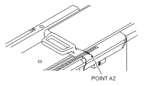

Operating Documentation
Direction 5440001-3, Rev# 6
Signa HDxt Service Methods
Module Version 3.0, Version Date 3/23/09
Operating Documentation |
| Required Persons | Preliminary Reqs | Procedure | Finalization |
|---|---|---|---|
| 1 | Not Applicable | 15 mins | Not Applicable |
This calibration compensates for errors in table positioning. Errors can be caused by differing encoders and stacking tolerances in the drive system components. This calibration is normally required after initial start-up of software on a new system. The procedure is comprised of three sections:
Longitudinal Drive Calibration
Config file update
Calibration Check
An error is logged to indicate the need for this calibration. (See Illustration 1.) This error is only a warning, and indicates that the table calibration files are not correct. Calibration may be necessary if the image does not align with the landmark. However, other factors could be causing this error, and calibration may not be the solution.
Illustration 1: Screen 1

| Item | Qty | Effectivity | Part# | Manufacturer | |
|---|---|---|---|---|---|
| Nonferrous Measurement Scale (must accurately measure up to 800 mm) | 1 | - | - | - | |
| Item | Qty | Effectivity | Part# | Manufacturer |
|---|---|---|---|---|
| Roll of Tape (to mark distances in the calibration procedure) | 1 | - | - | - |
| ||||
| Dangerous Magnetic Field! | ||||
| Possible Personal Injury and/or equipment damage. Tools made of ferrous or magnetic material may become dangerous projectiles and cause equipment damage or bodily injury when used near the magnet. | ||||
| Use only a nonferrous measurement scale for this procedure. |
Longitudinal Drive Calibration must be performed before the Electrical Isocenter Calibration procedure.
During Load From Cold, the Beginning of Travel (BOT) should be set to 50 and End of Travel (EOT) set to 2568. These are typical values, but the procedure will use whatever values are currently in the config file. Refer to Config File Update if parameter updates are necessary.
Move the cradle to the home position.
Move the cradle approximately 50 to 100 mm into the bore.
Turn on the alignment lights, and press landmark to set the control panel position display to 0 (zero).
Place a piece of tape on the cradle near the point farthest from the magnet and another piece aligned with it on the edge of the table. (See Illustration 2.)
Illustration 2: Marking/Indexing Reference Point A1

Record the scale point as A1 in Table 1. Record the shroud display reading as D1.
Table 1: Calculation Table
| A1 = | D1 = |
| A2 = | D2 = |
| DD (D2-D1) = | |
| DA (A2-A1) = | |
| See Values and Example below. | |
| MR Config File Values: BOT = 50, EOT = 2568 DD = D2 - D1 or 705 - 0 = 705DA = A2 - A1 or 700 - 0 = 700 | Example: Calculated EOT = ([EOT - BOT] * DD/DA) + BOT Calculated EOT = ([2568 - 50] * 705/700) + 50Calculated EOT = 2586 |
Fast forward the cradle into the bore until the first piece of tape is located near the end of the table (at least 700 mm from the first point).
| NOTE: | To eliminate backlash errors, be sure to approach the point from the same direction from which the first point was approached. |
Place a third piece of tape on the edge of the table aligned with the first piece of tape on the cradle. (Two pieces of tape are now on the table.) The two pieces of tape are spaced apart the same distance that the cradle has moved. (See Illustration 3.)
Illustration 3: Reading Point A2

Read the cradle position displayed on the control panel. This is the displayed distance. Record the shroud display reading as D2 in Table 1.
Measure the distance on the table between the second and third pieces of tape. This is the measured distance. Record the scale distance as A2 in Table 1. Move the table away from the magnet if necessary to use a steel rule but DO NOT move the cradle. The display on the gantry should not change, (1 in. = 25.4 mm).
Calculate the actual distance traveled as DA = [(A2 - A1)], and record value in Table 1.
Calculate the shroud distance as DD = [(D2 - D1)], and record value in Table 1. If DD differs from DA by 1 mm or less, no further calibration is needed. If DD differs from DA by more than 1 mm, continue with this procedure.
Calculate the parameter EOT. (See Table 1. (Round off calculated value to nearest mm).
| NOTE: | Calculated EOT is typically around 2,570 mm and cannot exceed 2,750 mm. |
Enter this new value in the configuration file. Refer to Config File Update .
Go to the Service Desktop, start the Service Desktop Browser if not already running, and start the Configuration File Manager.
Go to the Configuration tab.
(If necessary, refer to procedure for Configuration File Manager for additional information on file editing.)
Select Config File Manager.
Click on the link: Click here to start this tool.
Click the [MRconfig] button.
Confirm that the parameter Beginning of Travel (mm) is 50 mm. (See Illustration 4.
Illustration 4: Example of BOT Distance on Config File Manager Screen

Change the parameter End of Travel (mm) to the Calculated EOT value in mm.
Save the changes.
Reset TPS.
Repeat Longitudinal Drive Calibration.
DD should now equal DA within 1 mm. If it does not, continue Longitudinal Drive Calibration steps, update config file and recheck calibration.
No finalization steps.